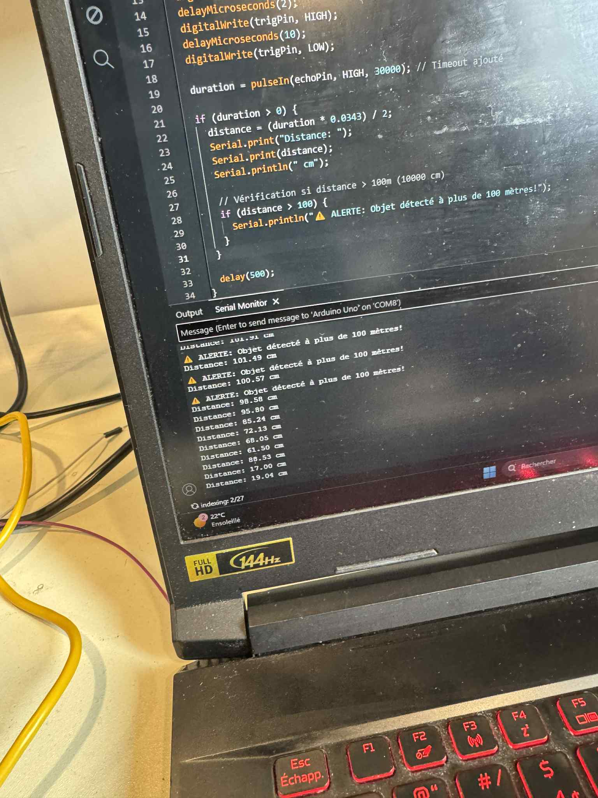
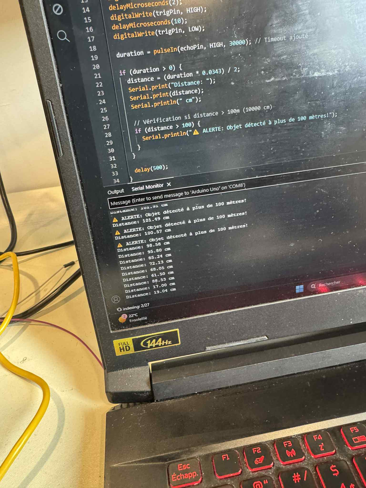

Une auto de marque ayant été concut une année inferieure dans les environ de 2018, n'est très souvent pas équippés de caméra de recul ou de système prévenant qu'il ya une autre automobile ou un objet quelconque à proximité. Devoir changer de voitures ou même en faire installer un appareil comme cela coûte excessivement cher. C'est donc pour cela que l'utilisation d'un arduino ainsi qu'une technologie pourrait permettre d'aider cela.
Je vais expérimenter un arduino ainsi accompagner d'un HC-SR04 ultrasonic sensor. Cet appareil est un capteur à ultrasons qui permet de mesurer la distance entre l'appareil et un objet quelconque, de plus avec l'aide du arduino il est possible de programmer des alertes sonores ou visuelles lorsque l'objet est trop proche , trop loin ou même afficher la distance entre l'objet et le capteur. le capteur, malgré son petit prix (environ 10$) est très efficace et précis, il peut mesurer des distances entre 2cm et 400cm avec une précision de 3mm. Le capteur est aussi très facile à utiliser, il suffit de le connecter à un arduino et de programmer le tout. Le modèle que j'ai choisi est le HC-SR04 car il est très populaire et possède les spécifications suivantes :


le capteur HC-SR04 ultrasonic et le arduino seront expérimentés afin de valider s'ils peuvent vraiment être utilse dans une voiture pour aider le conducteur à reculer en toute sécurité.
 

Après avoir expérimenté le capteur HC-SR04 ultrasonic et le arduino, je peux dire que ce système est très efficace pour détecter des objets et mesurer la distance entre le capteur et l'objet. Le capteur a réussi à détecter des objets de différentes tailles et formes, ainsi que des objets transparents, comme du verre ou du plastique. Le capteur a également réussi à détecter des objets trop loin et trop proches, et à afficher un message d'alerte lorsque la distance était supérieure à 200 cm. Cependant, le capteur a eu des difficultés à détecter des objets lorsqu'il y avait une interférence sur un des transmetteurs. Dans l'ensemble, je pense que ce système pourrait être utilisé dans une voiture pour aider le conducteur à reculer en toute sécurité, mais il faudrait peut-être ajouter un système de filtrage pour éviter les interférences.
Pour un assistant de recul qui ne coute pas cher, le combo Arduino Uno + HC-SR04 a du potentiel : c’est très accessible, car ce n'est pas cher, à une bonne portée et une précision quand même relative à la réalité. Cela peut être utile pour des démonstrations, mais aussi pour un usage personnel sur une voiture ancienne (non équipée d’un système de recul). En revanche, le HC-SR04 n'est pas parfait/infaillible, car il n'a pas de protections directement et n'est pas prévu pour des vibrations/températures extrêmes. Elle peut aussi être perturbée par de la pluie, de la neige, du vent, de la poussière, etc. Cette techno peut, par contre, être combinée avec d'autres capteurs (caméra, radar, écran) pour compenser ses défauts. Donc, parfait pour des démonstrations / usages personnelle, mais insuffisante pour un produit de sécurité avec des conditions réelles.
D'après ce forum "sparkfun", le HC-SR04 n'a pas de durée de vie spécifiée par le fabricant. Cependant, étant donné qu'il s'agit d'un capteur à ultrasons, il est probable qu'il ait une durée de vie relativement longue s'il est utilisé dans des conditions normales. De plus, le HC-SR04 est un capteur très populaire et largement utilisé dans de nombreux projets, ce qui suggère qu'il est fiable et durable.
Le HC-SR04 est stable dans des conditions normales, mais est affecté par des interférences ou des obstacles. De plus, pendant mes expérimentations, au début l'appareil ne détectait rien et a même commencé à surchauffer. Après plusieurs cours, je ne comprenais toujours pas pourquoi, mais après avoir changé à 3 reprises de capteurs, le tout a fonctionné parfaitement. C'est donc pour cela que je pense que la stabilité de l'appareil n'est pas parfaite.
Après plusieurs tests, le capteur a relativement bien fonctionné, mais, comme dit précédemment, il a eu des difficultés à détecter des objets lorsqu'il y avait une interférence sur un des transmetteurs et aussi c'était compliqué de détecter des objets en diagonales. Il est dit aussi que le capteur peut être perturbé par des changements de températures de 5 à 10 degrés ou plus. Donc, dans l'ensemble, je pense que ce système pourrait être utilisé dans une voiture pour aider le conducteur à reculer en toute sécurité, mais n'est pas efficace à 100%.
Le HC-SR04 est un capteur très simple et facile à utiliser, il n'a pas besoin de beaucoup d'entretien et très facile à ranger sans trop l'abimé, ainsi que le arduino. Cependant, il est important de protéger le capteur contre les chocs, la température, les animaux de compagnies, car cela pourrait l'endommager. De plus, il est important de le nettoyer pour éviter la poussière et la saleté qui pourraient affecter les performances du capteur. En cas de problème, le HC-SR04 est facilement remplaçable, car il est peu coûteux et largement disponible. Donc, dans l'ensemble, je pense que le HC-SR04 est un capteur facile à entretenir et à maintenir.
Le HC-SR04 est un capteur à ultrasons qui présente plusieurs avantages et inconvénients. Parmi les avantages, on peut citer : Le prix de celui-ci qui est très abordable d'environ 5-10$. ensuite, il n'est pas compliqué à utiliser, il suffit de le connecter à un arduino et de programmer le tout. deplus, il peut ètre utilisé dans les endroits sombres ou avec peu de lumière, car il utilise des ultrasons pour détecter les objets et, enfin, il n'est pas affecté par la couleur ou la transparence des objets. Parmi les inconvénients, on peut citer : Il peut être perturbé par des interférences ou des obstacles, ce qui peut affecter ses performances. De plus, il n'est pas infaillible et ne peut pas être utilisé dans des environnements humides ou mouillés. De plus, la précision de détection est affectée par la température, etc. Le arduino est aussi un microcontrôleur qui présente plusieurs avantages et inconvénients. Parmi les avantages, on peut citer : Il est facile à utiliser et à programmer, même pour les débutants. On peut trouver plusieurs documentations sur celui ci. Il est peu coûteux et largement disponible. Parmi les inconvénients, on peut citer : Il a une puissance de traitement limitée, ce qui peut être un inconvénient pour les projets complexes. Il n'a pas de système d'exploitation comme un Raspberry Pi, ce qui peut limiter ses fonctionnalités. Il n'a pas de connectivité Wi-Fi ou Bluetooth intégré etc.
Pour une petite voiture téléguidée, l’HC-SR04 est une bonne option avec l'alerte visuelle, l'alerte de la distance etc. Pour un montage sur voiture en conditions réelles, mieux vaut un ultrason étanche plus performant et qui peut ne pas être perturbé par des interférences, avec boîtier ou directement un capteur caméra avec l'intelligence artificiele comme le Tesla Vision.
Pour un assistant de recul à mettre sur un véhicule, j’affirme que le Arduino Uno et le HC-SR04 n'est pas adapté pour de vrai situation réelle. Bien évidemment, il est économique et simple, mais il ne répond pas aux exigences de fiabilité et de robustesse d’un système de sécurité automobile. Le capteur n'est pas pertinent au niveau de la longévité/robustesse, car le HC-SR04 n’est pas étanche, donc il ne résiste pas à la pluie, poussière, aux vibrations, aux températures. Pour la stabilité/efficacité, il n'est pas efficace à cause des mesures sensibles à l’angle, aux surfaces molles ou aux variations de température. Pour la maintenabilité et la sécurité, il est toujours important de le nettoyer pour éviter la poussière et la saleté, donc pour une automobile c'est quasiment mission impossible. Pour un prototype pédagogique, l’ensemble reste utile. Mais pour un véhicule, il faut passer à des capteurs adaptés: ultrason étanche ou, mieux, des capteurs comme la Tesla Vision (ultrasons grade auto, caméras/vision), intégrés avec un boîtier et un système électronique conçus pour l’environnement automobile.